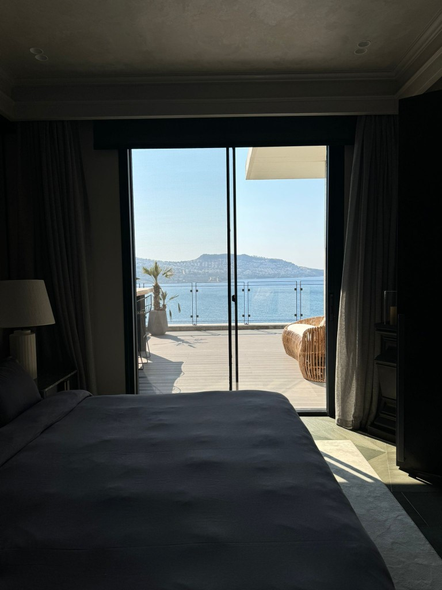
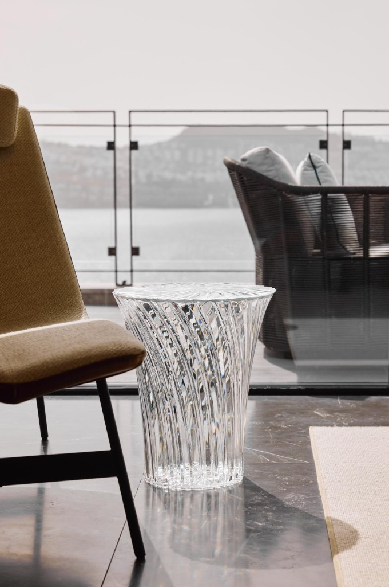
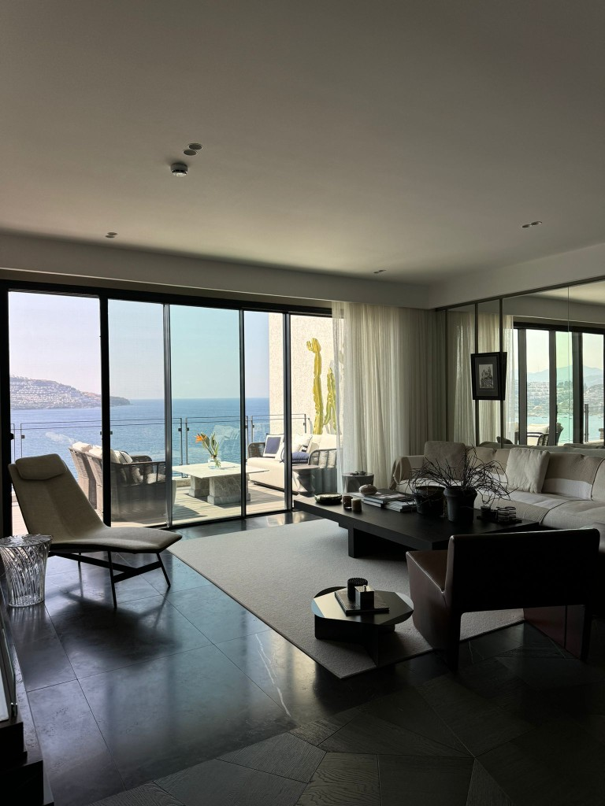
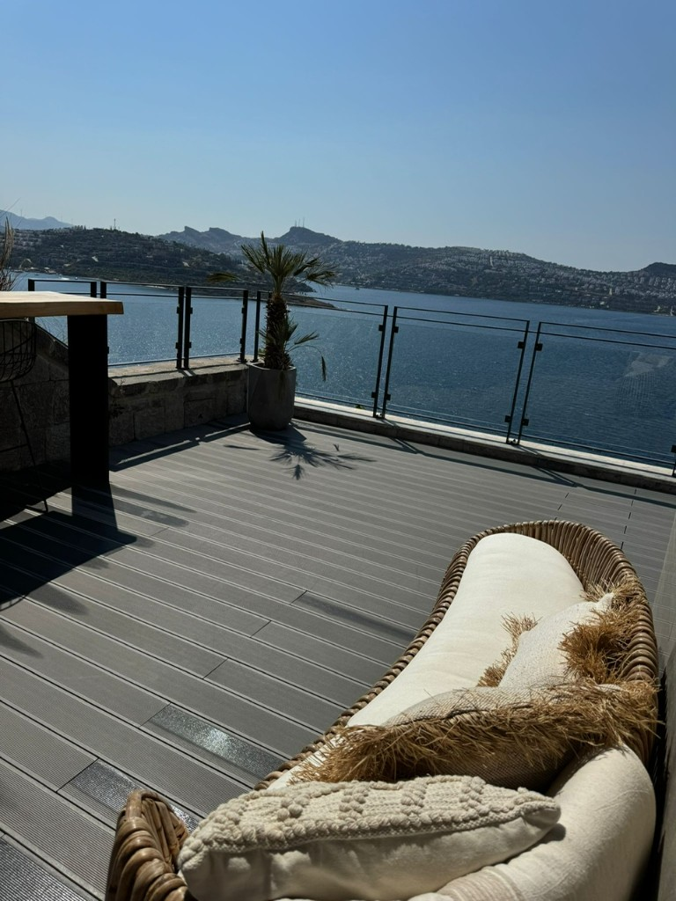

Частный портфель на первой линии моря в Бодруме
Искусство, море и тихая роскошь на побережье Бодрума.
Bodrum Art Villa объединяет жизнь у воды, атмосферу частной галереи и утонченную эгейскую архитектуру в редком прибрежном объекте.
Характер объекта
Живое произведение искусства, открытое синеве Бодрума.
Это не просто дом. Это ритуал жизни у моря: утренний свет на камне, хрустальные детали, выбранные арт-акценты и приватность, которая с первых минут создает ощущение частной коллекции.
Bodrum Art Villa
Детали, которые говорят о роскоши без лишних слов.
Расположение у моря, атмосфера галереи, престижное окружение и высокий уровень приватности делают этот объект редким портфелем Бодрума.
Жизнь у воды
Прямая связь с берегом создает редкий для Бодрума формат жизни.
Атмосфера галереи
Большие стены, драматичный свет и скульптурные детали формируют изысканную арт-среду.
Престижная локация
Рядом Hermes, Chanel, Beymen и Macro Center для высокого уровня повседневной жизни.
Приватность и статус
Детали портфеля предоставляются только квалифицированным покупателям конфиденциально.
Private Collection
Избранные кадры для сильного первого впечатления.
Гостиные, арт-детали, спальни, террасы и виды на море собраны в едином премиальном ритме презентации.




Частный показ
Запросите частный показ, чтобы увидеть виллу лично.
Подробная информация о портфеле предоставляется только квалифицированным покупателям. Все переговоры проходят конфиденциально.